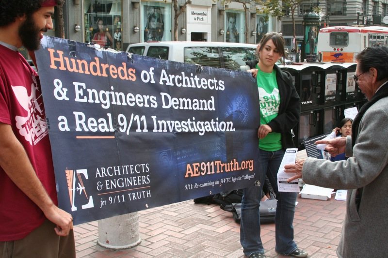

The 9/11 conspiracy theories revolve around the tragic downfall of the world trade center towers on September 11th 2001.
Al-Queda we're believed to be the culprits of the co-ordinated attack on the twin towers but many people believe that it was an act commitewd by federal agencies operating inside the United States of America; this lead to a large ammasment of conspiracy theories.
Of course, people would accept the idea that the terrorists were behind this operation (it certainly caused terror, why wouldn't they?) however the general public hadn't really a solid idea who to point the finger at.
These theories ranged from aliens to very angry arabs, some seemed far more believable than others, but some theories have raised some concerned questions as to their credibility; who was really the culprit of this tragic disaster?.
The Theories
The most ideal theory to claim some logical agreement was the thoery that the towers fell from a controlled demolition. There were also beliefs that the pentagon was not hit by a jet but instead a missle; launched from the confines if the U.S.A.
The other idea related to the pentagon being hit was that the airliner was allowed to crash into the pentagon as the military could be in an effective stand down. The idea that an airliner was allowed to crash into the pentagon was plausable but people began considering the idea that the U.S.A was behind this.
The main question to follow was why would they attack theior own country?
It's simple in one sense, to have an excuse to invade the middle eastern countries for resource.
The reasons
The reasons proposed by the conspirasists is that the U.S.A were behind this act as to have an excuse to take advantage of resources, such as oil and gas, in the middle eastern countries( pipeline plans launched in the early 1990s by Unocal). Other conspiracy theories revolve around authorities having advance knowledge of the attacks and deliberately ignoring or assisting the attackers.
Its very difficult to believe but it is a possibiltiy; many people from the U.S are more3 likely to believe the authorities then to the small groups of conspiricists.
Lets not overlook however the other party, who have staggering opposition and evidence to suggest their guilt, the terrorist group Al-Queda. They're reason for this terrible act is quite simple,their religious views see the western society as a blemish on the earth and would rather see it changed. The more extreme believers act by bombing innocent (or military) groups with suicide bombers or planned attacks.
Their not very popular to many people, including their own people, and the stereotypes that rose from this incident really impacted the Arab community.
So to sum up the reasons can vary from:
1. Prejudice acts on other religions
2. More oil for America (even though they have a private resevoir for themselves)
3. Al-Qeuda not putting up with our western shenaniggans
4. A bunch of extremeists acting out their views on the innocent/not so innocent
Sources of information
Many of you are reading this page thinking that "whoa, this guy is really biased about this topic isn't he?" Well you may have a point; but I invite you to look up, research and indulge yourself in the evidence and information available to you on the net.
Here are some great examples:
It's up to you to decide who is in the right, and who is in the wrong. There are way more sources of info online to look up for yourself; these are the tip of the iceberg.
The conspirisists
So who where the people who founded and nurturered these idea? Not the nutcases you hear about from asylums anyway. The majority of these conspirists are engineers, philosophers and professionals in their fields of expertise.
They analysed the footage, wreakage and evidence available to them and many would agree that the planes caused the downfall of the buildings; others would argue that it wouldn't be enough. Charlie Vitch would be an example of a leading conspirisist. He makes very compelling arguments
makes good video material and has a article detailing his persona:
Charlie Vitch interview
Architects & Engineers for 9/11 Truth (AE9/11Truth)

The AE9/11 are a group of professional engineers and architects that founded a campaign to bring the demolition conspiracy to light after they examined the aftermath. Founded in 2006, they started to seek the attention of the public and U.S office of congress by signing petitions (2000 signatures by professional architects and engineers) to assign a truely independant investigation into the 9/11 controlled demolition theory.
They have compelling evidence that the world trade center building 7 wasn't hit by a plane at all; eyt somehow collapsed during the attack. If a plane never hit it then how did it collapse? The NIST claim that it was the jet fuel melting the steel interior support but the AE9/11 architects say7 otherwise.
If you look up their work you can see video evidence, documented statements and plenty of professionals showing how the whole thing was planned. You can check their website for more info:
The Architects and Engineers for 9/11 truth website
The Conclusion
The aftershock of this terrorist act rippled through the states, the fear of terrorism was prominant through the vast majority of the american populus but the real perpatraitors are still surrounded in mystery to this day. Who can we really blame this on? The U.S government? Al-Queda? possibly some other ambiguos group?
he National Institute of Standards and Technology (NIST) and the technology magazine Popular Mechanics have investigated and rejected the claims made by 9/11 conspiracy theories; but this really never changed anything. The NIST could simply be re-assuring the people that the U.S are not to blame; maybe they're right?
The civil engineering community accepts that the impacts of jet aircraft at high speeds in combination with subsequent fires, not controlled demolition, led to the collapse of the Twin Towers.This also was the conclusion of the 9/11 Commission, chaired by Governor Thomas Kean.
The theories still hold merit even with this amount of evidence, its safe to say that no one really knows who were responcible. Was it the U.S that planned this scapgoat of a tragidy, or was it a terrorist organisation?
Thats for you to find out.